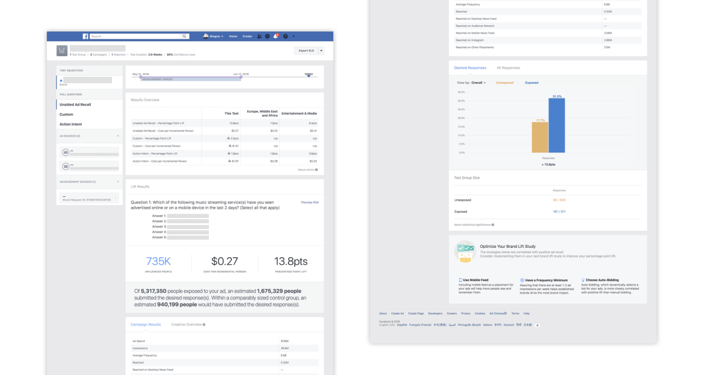
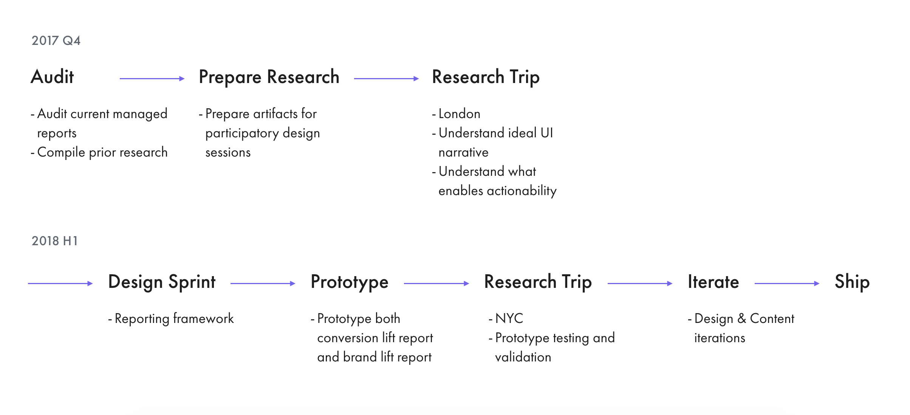
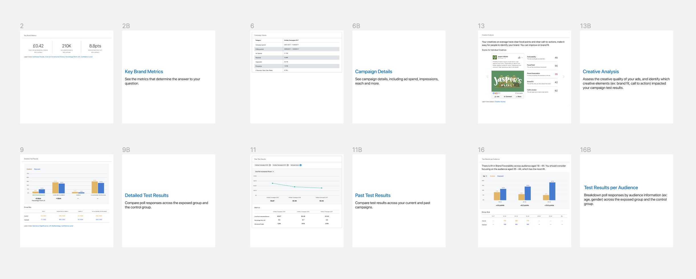
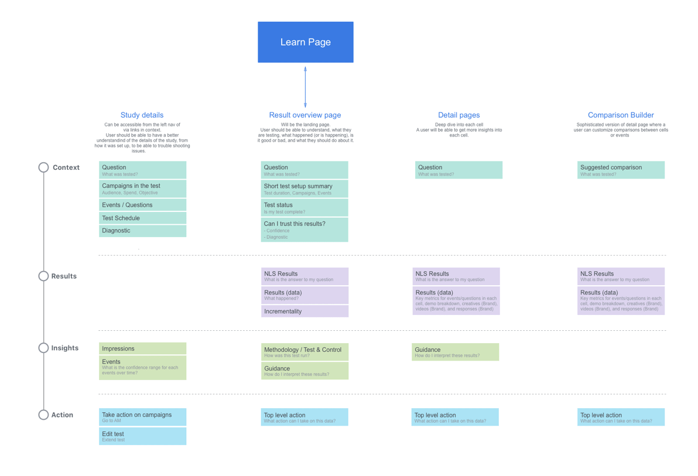
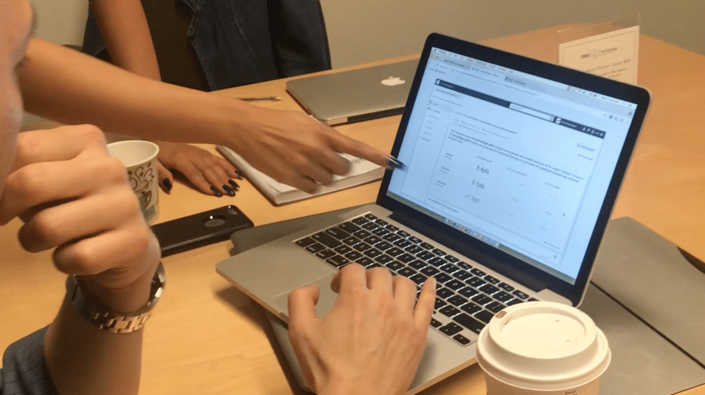
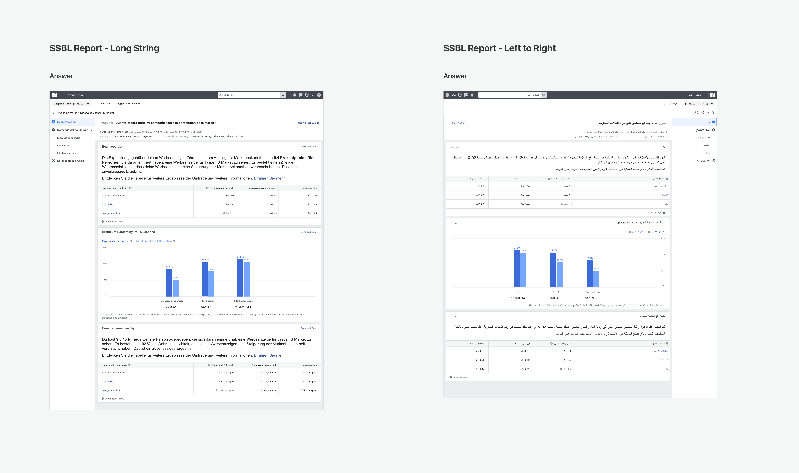

Brand Lift Report
Product Design · Meta · 2018
Product Design · Meta · 2018
I was working on the Lift team within Measurement under the Ads org at Facebook. I led the design effort in redesigning the Brand Lift report, working closely with PM, UX Research, and a Content Strategist. In parallel, I collaborated with a peer designer to develop a unified lift reporting framework extensible across measurement tools.
Brand Lift is one of the measurement solutions Facebook offers. We randomize a target audience into test and control groups, serve ads only to the test group, then poll both groups in News Feed with questions about the brand. By comparing favorable response rates between the two groups, we can measure whether the ads produced a lift.
At the time, only advertisers with a sufficient budget had access to account teams to help set up tests and interpret results. The existing Brand Lift reports were difficult to use independently — lacking metric clarity, a clear narrative, and actionable guidance. In order to empower more advertisers with Lift and enable self-serve access, we needed to redesign the report from the ground up.

The previous Brand Lift reportProject goals:
I started by auditing the existing report UI, compiling prior research findings, PMM inbound feedback, and evaluating the interface against design principles. Key problems identified: lack of a true summary page, content competing for attention, metrics that advertisers couldn't interpret without expert help, and natural language statements that conflated concepts.

Design process overviewTo answer what report narrative makes sense and what helps ease understanding and promotes actionability, we conducted research with 10 advertisers and advertising agencies in London using participatory design. Participants were given cards — each with a description of information and a visual example — and asked to assemble their ideal report. I led the card design and worked closely with UX Research on planning and conducting the sessions.

Examples of the participatory design cardsKey learnings from participatory design:
In parallel, a peer designer was working on the Conversion Lift report — which would be unified on the same platform. We ran a design sprint with cross-functional partners to establish a shared reporting framework, then built prototypes for each use case to validate it.

The Lift report frameworkWorking with UX Research, we tested the prototype with 16 advertisers and agencies across New York City and Chicago to evaluate whether the prototype achieved its goals.

At the research sessionKey findings from prototype testing:
A lot of the problems uncovered in research were about content. I worked in close collaboration with a Content Strategist to revise metric definitions, natural language statements, and test terminology. After content was finalized, I spec'd out the full design and worked with engineers on requirements and edge cases — including localization for long strings and right-to-left languages.

Localization design for long strings and right-to-left languagesThe report was built and shipped together with the self-serve Brand Lift solution, making Lift accessible to a much broader set of advertisers for the first time. The project contributed to measured spend — our top-line metric — though I did not get to see the detailed analysis.
The self-serve launch was the foundation. The natural next step is closing the feedback loop — giving advertisers clearer guidance on how to act on results across different confidence scenarios (low, medium, high), and surfacing recommendations that tie directly to their campaign objectives. Longer term, the unified reporting framework creates an opportunity to give advertisers a single, consistent view across all measurement solutions: Brand Lift, Conversion Lift, and Split Testing together.